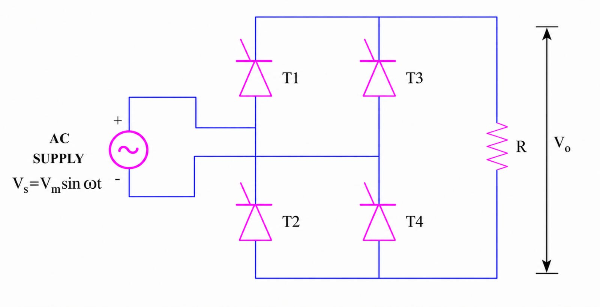
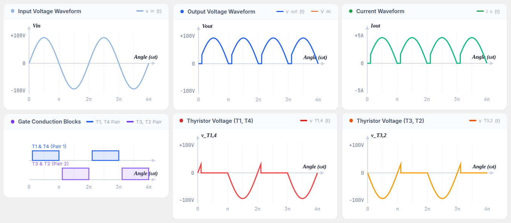
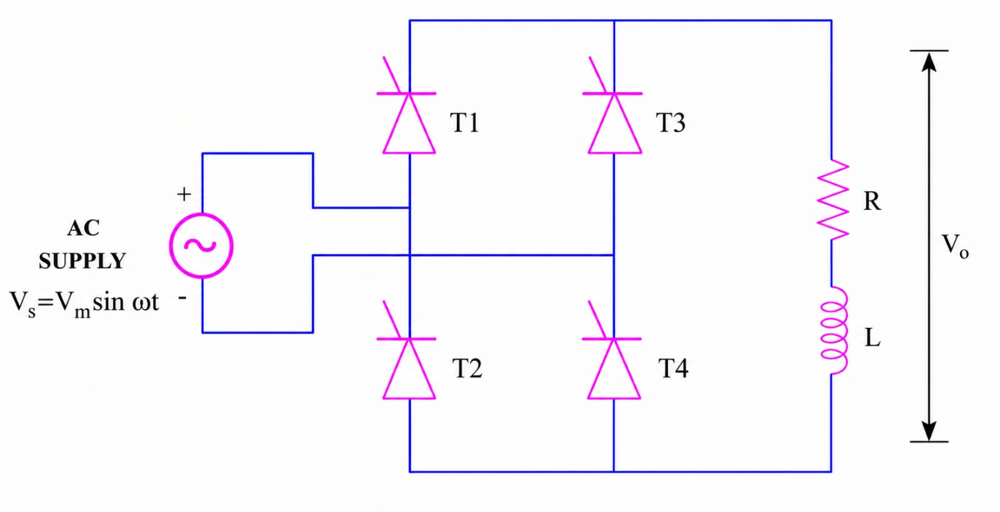
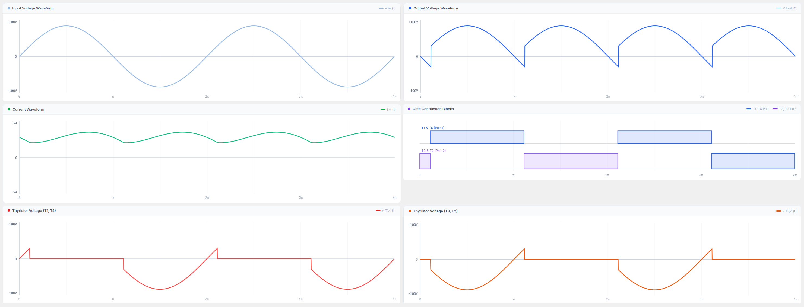
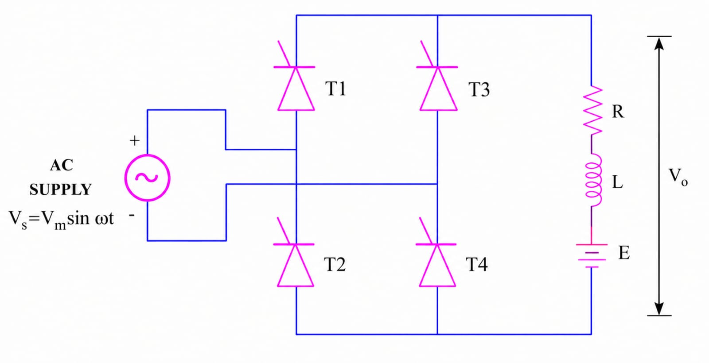
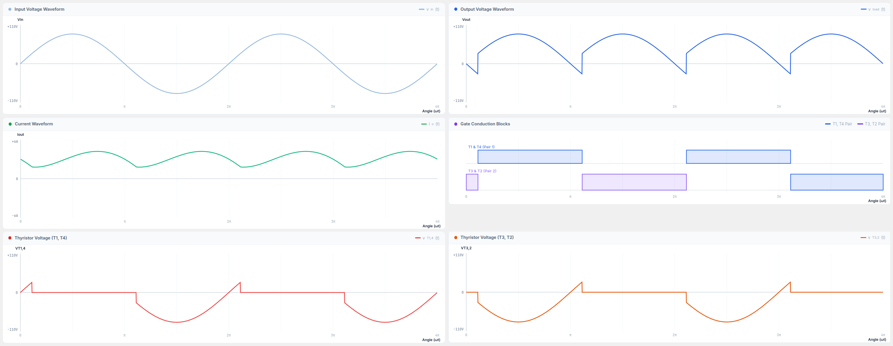

A controlled rectifier is an electronic circuit that converts alternating current (AC) into direct current (DC). It consists of power electronic devices, typically thyristors or silicon-controlled rectifiers (SCRs), which are controlled to switch the flow of current in a desired manner. The main function of a controlled rectifier is to control the magnitude and polarity of the output DC voltage. It is commonly used in various applications where precise control over the rectification process is required such as power supplies, motor drives, battery chargers, and voltage regulators.
The controlled rectifier operates by using a triggering mechanism to turn on the thyristors at specific points in the AC waveform. Once the thyristors are triggered, they conduct current until the AC voltage crosses zero or until the thyristor is turned off. By controlling the timing of thyristor firing, the rectifier can vary the average DC voltage output.
A single-phase controlled bridge rectifier converts alternating current (AC) input into a direct current (DC) output using a bridge configuration of thyristors (SCRs). It provides full-wave rectification and allows for control over the output voltage. Here's how a single-phase controlled bridge rectifier works:
1. Bridge Configuration: The bridge rectifier consists of four thyristors connected in a bridge configuration, along with a load resistor and a DC output terminal. The AC input voltage is connected across the two opposite corners of the bridge, while the load resistor and the DC output terminal are connected across the other two corners.
2. Triggering Control: The thyristors are triggered in a controlled manner using gate pulses to determine their conduction timing. The thyristors are triggered in pairs, with one thyristor from each pair conducting in alternate half-cycles of the input voltage.
3. Operation: During the positive half-cycle of the input voltage, the thyristors on the positive side of the bridge (top two thyristors) are triggered to conduct. This allows the positive half of the input voltage to appear across the load resistor and the DC output terminal.
4. Voltage Polarity Reversal: During the negative half-cycle, the thyristors on the negative side of the bridge (bottom two thyristors) are triggered to conduct, effectively reversing the polarity of the output voltage. By controlling the timing of thyristor triggering, the average DC output voltage can be varied.


A fully controlled full-wave bridge rectifier is shown in Fig. 1. All four devices are thyristors T1–T4 for control of output power. Diagonally opposite pairs of thyristors are made to conduct and are commutated simultaneously. During the first positive half cycle, thyristors T1 and T2 are forward biased; when triggered, current flows through the load via T1–load–T2–source. During the negative half cycle, T3 and T4 conduct similarly. Thyristors T1, T3 and T2, T4 are triggered at the same firing angle α in each respective half cycle. When supply voltage falls to zero, current also becomes zero and thyristors turn off by natural commutation.
The average of the waveform is determined by:
The current with R-L load does not increase or decrease suddenly. So the waveform between the output current and the output voltage is different, and the output current will tend to increase after each cycle. If the inductance of the load is large enough, the output current is continuous. When the SCR changes from the conductive state to the off state, the load generates energy to maintain that SCR in conduction. Therefore, after the polarity of the voltage reverses and there is no control pulse, the output voltage Vo < 0.


At firing angle α = 60°, thyristors TH1 and TH3 are triggered. Supply voltage from this instant appears across the output terminals and forces current through the load. The load current Idc is assumed constant. At instant π, the supply voltage reverses but because of very large inductance L, the current keeps flowing in the same direction at constant magnitude Idc. Thus TH1 and TH3 remain conducting and negative supply voltage appears across the output terminals. At angle π + α, thyristors TH2 and TH4 are triggered, commutating TH1 and TH3 by natural commutation.
The amplitude of AC harmonic terms are calculated from:


The circuit arrangement of a Single Phase Full Wave Controlled Rectifier with R-L-E load is shown in Fig. 5. During the positive half cycle, thyristors TH1 and TH3 are forward biased and start conducting at ωt = α. The load current flows through TH1, motor, and TH3. At ωt = π, the supply voltage reverses. Because of inductance L, thyristors TH1 and TH3 continue to conduct beyond ωt = π. When TH2 and TH4 are triggered at ωt = π + α, thyristors TH1 and TH3 are subjected to reverse bias and turned off by natural commutation. Load current is transferred from TH1 and TH3 to TH2 and TH4. Load current tends to remain almost constant due to high L/R ratio.
When we use a load with components R, L, E, the output waveform is as shown in Fig. 6. If the SCR is conducting, the output waveform is the same as that of the R-L load rectifier circuit. When no SCR is conducting (Io = 0), the output voltage equals E (Vo = Vdc).